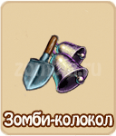

Получено: файл; исходный URL. Первая иллюстрация карточки каталога; подписи изображений источника могут содержать ошибки. Авторство и идентичность при замене домена не подтверждены. Страница: источник.

Зомби-колокол (трофей)
браузерная версия; платформа и дата редакции не установлены- Тип
- Трофей
- Версия и дата
- браузерная версия; платформа и дата редакции не установлены
Данные по источнику · браузерная версия; платформа не указана · дата редакции не установлена
Предварительно: Содержимое списка: изображения и колонки могут терять смысл при извлечении текста; отдельная страница и дата не проверены. Подписи alt иногда ошибочны.. Требуется сверка.
- Текст карточки из каталога
- 1. Накопайте у друзей 41 колокольчик: 41 2. Накопайте у друзей еще 500 колокольчиков : 500 3. Накопайте у друзей еще 1000 колокольчиков : 1000 Всего: 1541 колокольчик
Связанные сущности
нет проверенных связей — требуется сверка.